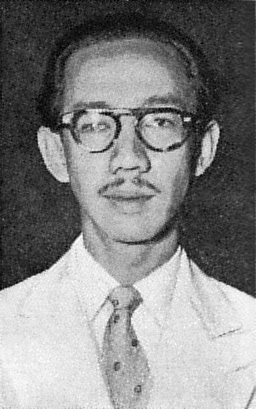

Sumitro Djojohadikusumo
| Lahir | : | 29 Mei 1917 |
| Meninggal | : | 9 Maret 2001 (umur 83) |
| Profesi | : | Ekonom, politikus |
| Tanda tangan | : |  |
Prof. Dr. Soemitro Djojohadikoesoemo (EYD: Sumitro Joyohadikusumo; 29 Mei 1917 - 9 Maret 2001) merupakan seorang ekonom dan politikus Indonesia. Sebagai salah satu ekonom Indonesia paling terkemuka selama masanya, Soemitro pernah menjabat sebagai Menteri Perdagangan dan Industri, Menteri Keuangan, dan Menteri Riset baik selama era Orde Lama maupun Orde Baru. Dia juga pernah menjadi Dekan Fakultas Ekonomi Universitas Indonesia dari 1951 hingga 1957.
Kehidupan Saat Orde Baru
Setelah Soekarno jatuh dan digantikan oleh Soeharto, sejumlah bekas murid Soemitro seperti Widjojo Nitisastro, Mohammad Sadli, dan Emil Salim ditunjuk sebagai menteri atau penasihat dalam pemerintah. Soeharto menugaskan Ali Murtopo untuk memulangkan Soemitro ke Indonesia, dan Ali bertemu dengan Soemitro untuk membujuknya pulang di Bangkok pada bulan Maret 1967. Soemitro setuju untuk pulang, dan ia kembali secara rahasia pada pertengahan tahun 1967 karena kekhawatiran pemerintah akan simpatisan Orde Lama. Soemitro diangkat menjadi Menteri Perdagangan dan Industri dalam Kabinet Pembangunan I pada tanggal 10 Juni 1968.
Sebagai Menperindag di era Orde Baru, Soemitro mengimplementasikan sejumlah kebijakan dagang yang bertujuan untuk mendorong ekspor atau menekan impor produk tertentu. Sebagai contoh, Soemitro mendirikan beberapa badan yang mengatur kualitas dan ekspor komoditas kopi dan kopra, sembari melarang ekspor karet alam berkualitas rendah untuk mendorong hilirisasi industri karet. Soemitro juga mendorong pengurangan impor barang konsumsi dan peningkatan impor barang modal, dan bea masuk ditingkatkan sebagai pendapatan pemerintah. Kabinet Pembangunan I ini juga mencakup Mafia Berkeley, sekumpulan ekonom yang belajar di universitas-universitas barat dan sebagian pernah menjadi murid Soemitro. Selain sebagai Menperindag, Soemitro juga menjadi salah satu penasihat ekonomi Soeharto.
Pada tahun 1973, Soemitro dijadikan Menteri Riset dalam Kabinet Pembangunan II. Ada sejumlah pihak yang beranggapan bahwa perombakan ini disebabkan adanya pertidaksetujuan antara Soemitro dan Soeharto dalam kebijakan ekonomi. Dalam kapasitasnya sebagai Menteri Riset, Soemitro memulai program penelitian nasional dalam bidang ekonomi yang melibatkan fakultas-fakultas ekonomi berbagai universitas di Indonesia, dengan tujuan membantu penyusunan program ekonomi pemerintah. Hal ini dilakukan Soemitro karena kekhawatirannya bahwa Rencana Pembangunan Lima Tahun Soeharto kurang memperhitungkan tren-tren dan kondisi ekonomi jangka panjang di Indonesia. Meskipun program ini berguna untuk pemerintah, Soemitro digantikan oleh B. J. Habibie dalam Kabinet Pembangunan III sehingga program tersebut dihentikan.
Di luar kariernya dalam struktur pemerintah, Soemitro juga terlibat dalam dunia usaha. Bersama dengan Mochtar Lubis, ia mendirikan Indoconsult Associates pada tahun 1967. Indoconsult Associates merupakan salah satu firma konsultan bisnis pertama di Indonesia. Soemitro juga terlibat dalam naiknya Grup Astra sejak tahun 1968, ketika Soemitro membantu grup tersebut memperoleh lisensi importir tunggal mobil Toyota. Keluarga Tjia pendiri Astra telah menjalin hubungan dengan Soemitro sejak jaman Orde Lama. Soemitro sempat menjabat presiden komisaris Astra pada tahun 1992. Dalam karier akademiknya, Soemitro menjadi salah satu pendiri organisasi akademis East Asian Economic Association (Asosiasi Ekonomi Asia Timur) pada tahun 1984, dan ditunjuk secara aklamasi menjadi ketua umum pertama organisasi tersebut
Soemitro sering dianggap sebagai ekonom Indonesia yang paling berpengaruh, baik selama periode Orde Lama maupun Orde Baru. Setelah tidak lagi menjabat menteri, ia mulai khawatir akan struktur fundamental ekonomi Indonesia dibawah Soeharto. Meskipun industrialisasi berjalan cepat, Soemitro melihat munculnya kepentingan-kepentingan yang menguasai sejumlah industri, dan tidak setuju dengan kebijakan dagang pemerintah yang dianggapnya terlalu proteksionis. Ekonomi Indonesia pada masa itu dianggapnya rapuh dan hanya terlihat kuat di permukaan.Meskipun pengaruhnya dalam pemerintahan sudah turun drastis, ia mengkritik sejumlah kebijakan pemerintah seperti program mobil nasional Timor dan para "pemburu rente". Setelah krisis finansial Asia menghantam Indonesia pada 1997-1998, Soemitro menyalahkan korupsi dan institusi-institusi nasional bermasalah atas kerasnya dampak krisis tersebut di Indonesia.